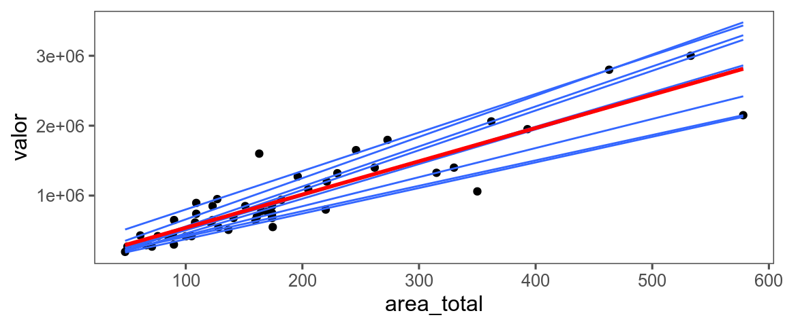
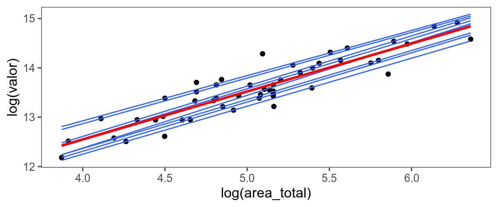
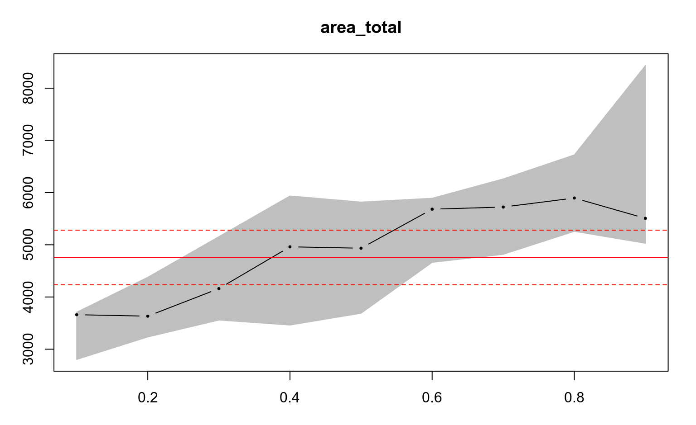
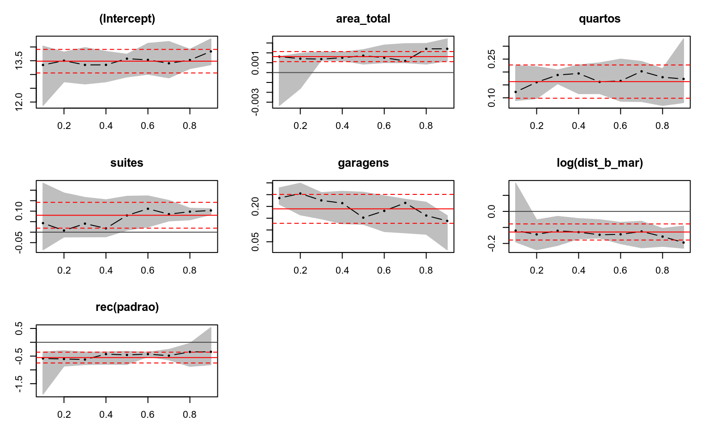

Regressão Quantílica

Carlos Augusto Zilli

\[\min_{\mu \in \mathfrak{R}} \sum (y_i - \mu)^2\] 2. Mediana
\[\min_{\xi \in \mathfrak{R}} \sum|y_i - \xi|\]
\[\min_{\xi \in \mathfrak{R}} \sum \rho_\tau (y_i - \xi)\]

\[\min_{\mu \in \mathfrak{R}^p} \sum (y_i - \mu(x_i, \beta))^2 \]
\[\min_{\xi \in \mathfrak{R}^p } \sum \rho_\tau (y_i - \xi(x_i, \beta))\]




| 10% | 50% ou média | 90% | |
|---|---|---|---|
| Regressão linear (IP) | 802.017,63 | 961.660,64 | 1.153.080,88 |
| Regressão quantílica | 810.629,32 | 946.467,87 | 1.186.954,14 |